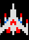
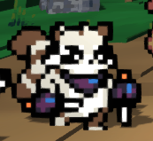
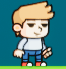
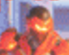
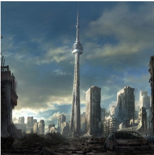
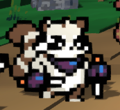
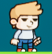
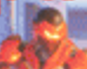
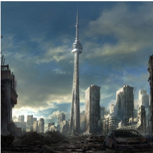

Landing
Welcome to my homepage! Scroll down to see the projects Ive Worked on!


Skills
HTML, CSS, JavaScript, C#, C++, Lua, SDL, OpenGL
Projects
These are the projects that I have worked on.
 






